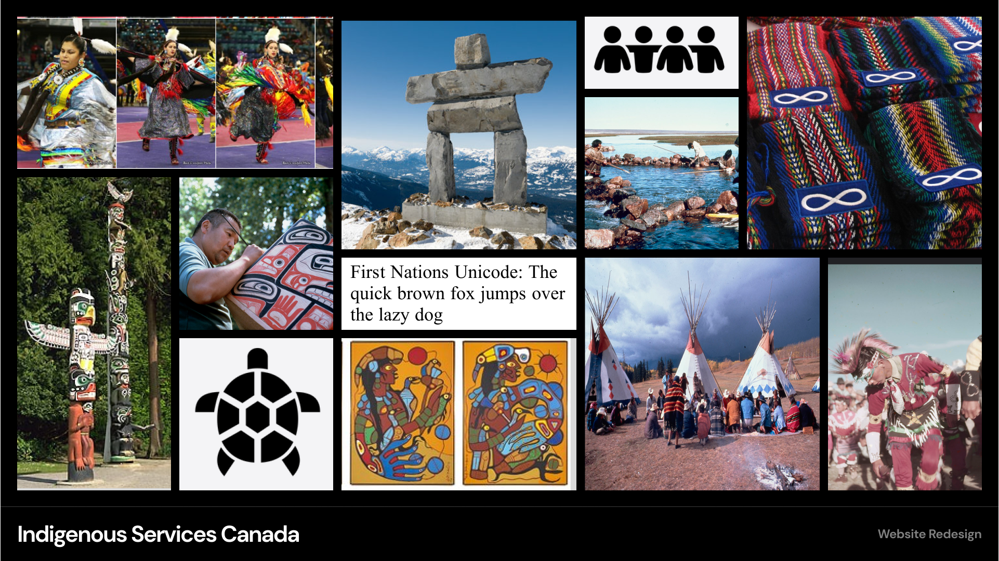
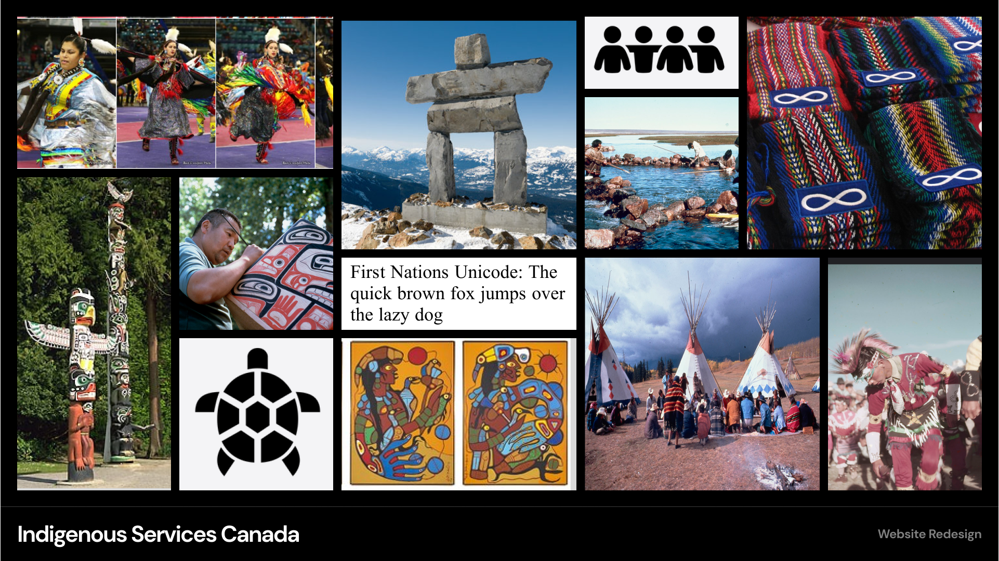
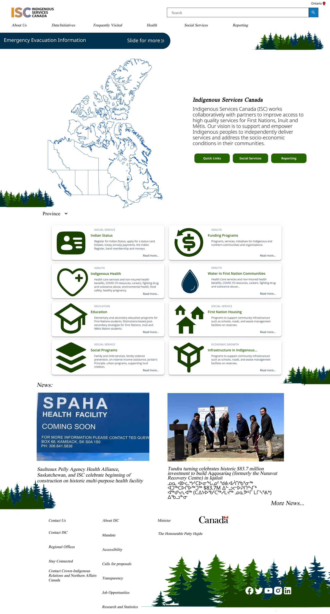
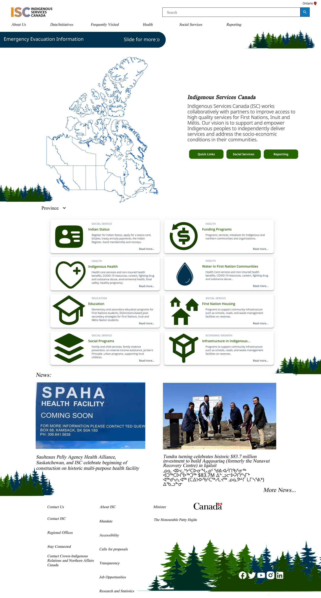

My Work

Indigenous Services Canada Website Redesign
The ISC site was in dire need for a revamp as it was confusing to navigate and understand content,and the side was not welcoming or attractive. We propose a new pirmary Nav to help reorganize the content in a more user friendly way. We also suggest adding more color and making the site more inviting. The proposed ideas will transform the user experience and allow them to find what they are looking for faster and spend less time on the site lost.
Roles and Responsibility

User researcher
UX writer
Information Architect
Product designer
Interaction designer
Expectations and Goals
Redesign and clean up Indigenous Services Canada website to create a more engaging and easier to navigate website.
Phase 1 - User Research
The user research portion began with a research plan and 5 one on one usibility tests. Huristic evaluation and color audit were also performed to get a scope of the current site

As a government website it was expected to pass the color audit. The Heuristic evaluation revealed the site was confusing from the content to the navigation
Phase 2 - Definition & Synthesis
Next came the Affinity diagram, Protopersona, and user flow. This stage allowed us to take the feedback from the tests and identify the user pain points.

User testings were performed 1 on 1 with 5 users of varying technological abilities and age. The Affinity Diagram gave us these 5 pain points/positive points from the current site:
- Navigation is confusing
- Too much information (it is hard to find what you are looking for)
- Font size is good, very accessible
- Aesthetically boring
- Information is difficult to understand and hard to digest
Phase 3 - Ideation
Ideation came with many moodboards, card sorting, and site maps. Now knowing the user painpoints, we can plan the changes to better the user experience and add stylstic enhancements.
 

Vision:
ISC should be informative, useful, helpful and inviting. The goal of ISC is to provide services to Indigenous peoples effectively and efficiently.
Values:
Useful, helpful, inviting, effective, and efficient.
Phase 4 - Prototyping
Prototyping stage came with lots of back and forth with testing and prototyping. I also find more of a style path for the new site as I create the prototype
 

After some A/B testing, we changed our colors for the Hi-Fi final product
Phase 5: User Testing + Outcomes
Usubility testing consisted of 8 users either doing A/B testing or general usubility testing. My findings helped me refine the final prototype